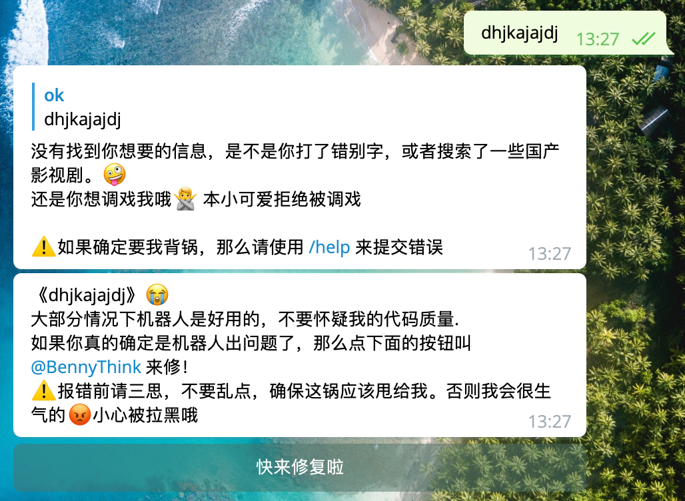
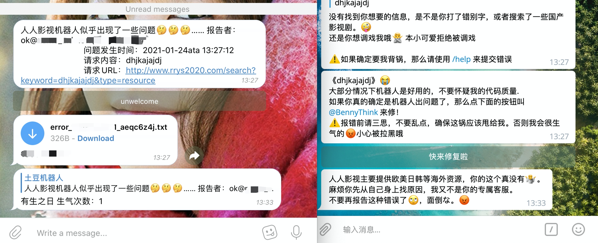
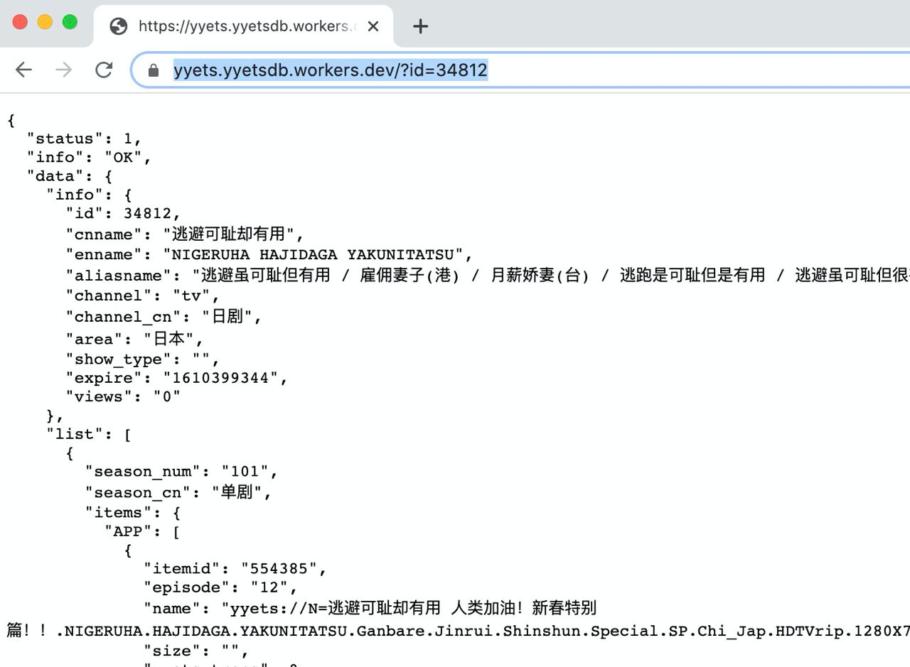
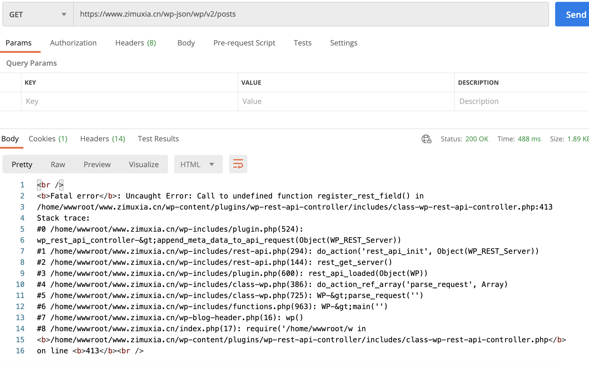
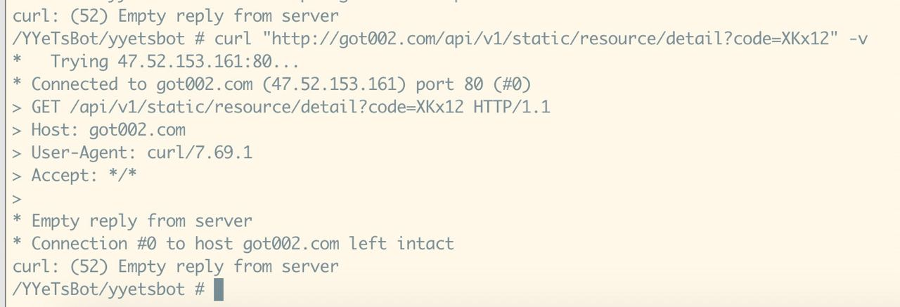
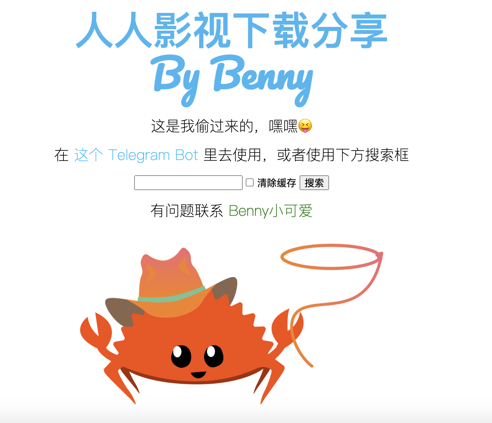
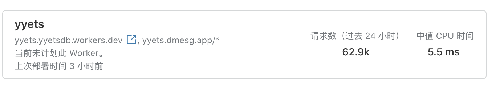
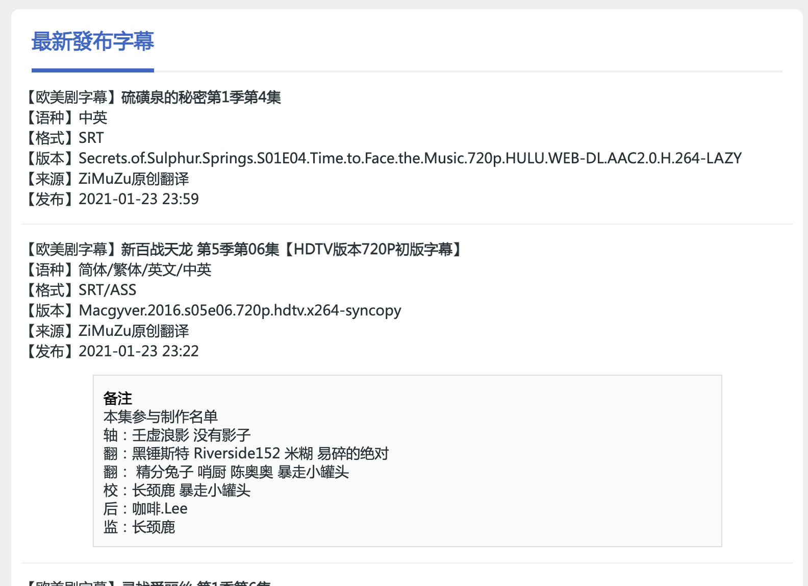

没了人人影视，我们该怎么办？
文章目录
太长不看版：
我把资源都爬下来了。
2021年1月4日，人人影视发布公告称“正在清理内容，所有客户端均无法正常使用”。
过了段时间，网友们发现，本来在资源页面中可以跳转到的分享页面，基本上全部消失了。
不过好在人人影视的分享API还是能够正常使用的，因此我的 bot也还正常。
归档人人影视
为了避免出现问题，我便想把整个人人影视的资源都归档出来。简单的观察了一下人人影视的资源格式，如这个URL：http://www.rrys2020.com/resource/40000
其实就可以发现，只要resource后的数字从1开始不停地遍历，就可以获取到全部资源了。你看，这就是不使用UUID的结果，被我这种磨人的小妖精发现了吧！
那么现在就很简单了，从1开始遍历，遍历到最新的剧集的ID为止，通过分享API拿到数据，然后存储到数据库里。为了避免出现rate limit，加上随机休眠；为了加快遍历速度，还要考虑并发。这两者看起来是矛盾的组合，也确实挺难调和的。同时为了让界面更友好，使用一个简单的进度条来告知进度。
真的是非常简单的，有兴趣的可以参考这里的源代码
开源地址ping了一下，人人影视的主站和分享站API都在香港阿里云上，那么用香港的aws去跑是最好的。最终我把这些资源都跑了下来，存到了MySQL中并发布了出去，然后推特发了出去。
https://twitter.com/BennyThinks/status/1348614240098086913?s=20
这么一发布，没想到竟然让我的channel订阅者人数加一个0，Twitter follower翻倍。真是受宠若惊😂。
被机器人轰炸是一种怎样的感觉？
突然一下子多了这么like，bot的使用量也开始飙升。
最开始为了方便修复bug，我设置了一个“向开发者提交错误信息”的功能，大概是这样子的：

点一点按钮谁不会嘛，点一点又不会消耗很多精力，作为一个资深的伸手党，这一切不符合预期的结果肯定不是我的错，那我就点一下就好了，一下不好用，那么我就点两下三下。反正既不吃亏也不上当。
也许有一些人是这样想的吧！
结果这次就开始不停地收到各种报错信息，都有什么样子的呢？
- 喜洋洋与灰太狼
- 战狼，流浪地球
- 权利的游戏
- 各种莫名其妙的我也不记得是什么了
- ahsjhsads然后瞬间block bot的
etc...
第三种打了错别字的还可以理解，剩下的是在难为我胖虎吗？😡🤬
原有的设计是，出现错误报告的时候，我需要登录到vps上，使用一个messenger.py 来回复，但是这样就很麻烦，不仅要ssh还要去container里，而且需要在电脑旁。后来我优化了一下，直接在Telegram里就可以回复，我看到的大概是这样的：
可是有些用户依旧在汇报这种根本就是无法处理的问题，有的甚至还点两次，非常无奈的我就……我让你点两次试试看！😠
甚至最后我还开发了一键生气和一键回怼功能

然而并无卵用，该点的还是会点……😂这么不相信我的代码质量吗？😱本来还想，要不我弄个黑名单的功能，想了想还是算了，直接默认关闭了这项功能就可以了。
在这件事情中，我学习到了，总是有一部分人是不会认真读说明的。🤣
气鼓鼓🤨
人人影视网站间歇性访问问题
为了方便部署，我的所有Bot是使用docker-compose启动的，丢在了一台英国的大鸡鸡上。毕竟Bot API Endpoint在荷兰，英国访问过去会比较快。再加上这是大鸡鸡，内存和CPU资源都很充足的。
某天（1月17日），突然发现bot的回应很慢，然后发现是从英国访问人人影视有点艰难，经常出现connection reset等情况。
看了一下香港和新加坡还是比较稳定的，于是就一个rsync把YYeTs bot迁移到了新加坡。
同时，为了避免某天人人影视真的炸掉，我开发了一个Offline模式（😂被我rebase了之后，时间好像不对了），使用环境变量来控制是否启用。最终数据来源就是上面归档的那些数据。
那么数据存在哪里呢？老早之前就听Nova大佬说Cloudflare worker怎么怎么香。于是我便很暴力的撸了一个非常原始的页面，有多原始呢？

直接返回json可还行😂
此时，人人影视专用链接 yyets:// 还是能够在客户端里下载的，速度还不错的说。
しかし，此时我还不知道，我用wrangler bulk:put的数据其实是不全的……因为wrangler bulk虽然有10000个kv的限制，但是Cloudflare对于免费用户，每天还是只有1000的限制的。所以其实我以为两天能够导入完整的17517条数据，其实只有2000🤦♀️
人人影视网站无法访问
随后，我又添加了FIX字幕侠的支持。在搞它的过程中，发现这家伙竟然是拿WordPress搞的！那有WordPress的Public API，还爬个毛线啊，直接把整个wp.posts端回来了……🤔

しかし。。。好吧，通过插件把Public API禁用了，并且这个插件还有Bug😂。不过这下子也发现了用的是 LNMP一键安装啊。那就只好搞常规的爬虫+Redis了。
搞完FIX的第二天，突然发现人人影视无法访问了。主站无法访问，分享站的API也挂掉了。当然，服务器还在，还能ping通。那就只好切换到fix啦！

再后来，我用了很多时间去优化，甚至搞出来了优先级搜索，FIX找不到，再去人人影视搜索。甚至还可以指定字幕组搜索。比如说这样：
有时发现Bot没有回复，但是进程也没有退出，就是纯粹的卡死了。是由于任务太多，访问网站又很慢，然后pyTelegramBotAPI的线程池满了吗？也许以后可以考虑把爬虫这部分功能集成到celery中。
当下，喜欢简单暴力的我我又用Client API写了一个health check🤦♀️
更友好的Worker Website
在人人影视挂掉的当天，我发现了其实人人影视只是部分URL是挂掉的，某些资源还是可以很容易的get回来的。got002.com 也是同理，只是API坏掉了，页面资源还在。
于是我就发挥了我的小偷技能，把这些资源都搞了回来，然后一顿操作猛如虎，把这个仿真的人人影视分享站搞到了Cloudflare Worker上。
Dr. Brand: Lazarus came back from the dead.
Cooper: Sure, but he had to die in the first place.
这个Worker也不再简陋了。甚至还有一个更酷的搜索页面和更短的域名https://yyets.dmesg.app/ ：

我甚至还无聊到加上了资源分享页面访问量的统计😂这个代码写得超烂的，啊！
别说，这个Worker的访问量还真是挺多的。放心，够用的！

最近24小时有62.9K的访问量，反正比我博客都多出来好几个0就是了。哦对，这个数据是完整的，因为我有钞能力呀！🦸♀️
那么现在该怎么办
通过切换到FIX、使用YYeTsOffline作为fallback，糊了一个Worker Website，目前是差不多够用的。
那么以后该怎么办，难道我们真的只能告别人人影视了吗？
由于我现在已经不是人人影视字幕组的成员了，以下内容也只是推测。我本人还是持比较乐观的态度的。
人人影视只是部分页面坏掉了
这一点我在上面提到了，实测起来只是部分页面“故意坏掉”了，有一些页面还是有一定概率可以返回的，比如说
- 部分资源页面，如 http://www.rrys2020.com/resource/41579
- 播出表 http://www.rrys2020.com/tv/schedule
- 排榜榜 http://www.rrys2020.com/html/top/week.html
- 公告 http://www.rrys2020.com/Announcement
- 字幕分享 http://www.rrys2020.com/subtitle/66221
- 收藏 http://www.rrys2020.com/user/fav 甚至在收藏里还能看到下载地址！
你看下面这个图，还能签到呢
2021年1月30日更新：网站已经ping不通了
Obrien-hk:~ # ping got002.com 12:23.35 Sat Jan 30 2021 >>>
PING got002.com (47.52.153.161) 56(84) bytes of data.
^C
--- got002.com ping statistics ---
17 packets transmitted, 0 received, 100% packet loss, time 16389ms
ps1_fortune:2: command not found: fortune
Obrien-hk:~ # ping www.rrys2020.com 12:23.54 Sat Jan 30 2021 >>>
PING www.rrys2020.com (47.52.174.174) 56(84) bytes of data.
^C
--- www.rrys2020.com ping statistics ---
22 packets transmitted, 0 received, 100% packet loss, time 21482ms
ps1_fortune:2: command not found: fortune
人人影视还在正常翻译新剧吗？
既然某些页面是坏掉的，那么是不是针对不同等级的用户使用了不同的策略？或者说有另外一个“马甲站”在发布新的资源？毕竟，服务器ping起来没问题，那么看起来就是应用端有一些限制了吧？
我个人看来，还在翻译的，但有没有压制，就不知道了……并且，人人影视客户端已经无法下载 yyets的专用链接了。可能是“tracker”关掉了吧？

不如这么办……
尽管我归档了人人影视的资源，但是还是缺少了新鲜的血液。
使用外挂字幕
目前来看，人人影视依旧还在翻译，字幕也上传到了subhd。那么可以自己下载片源然后外挂字幕了。当然，如果看日剧的话，追新番也还是好着的，这点就很让人开心了。
使用FIX
FIX的翻译质量也还不错的，作为替代选择很不错哦。
使用bot、Worker
worker只包含了归档的资源，bot会优先搜索FIX，然后如果没有搜索到才会去搜索Worker。看起来也还是不错的呢。
汇总
- ❌ 人人影视主站 http://www.rrys2020.com/
- ❌人人影视资源列表 http://www.rrys2020.com/resourcelist
- ❌ 人人影视字幕列表 http://www.rrys2020.com/subtitle
- ✅ 磁力站（很慢） http://www.mag234.com/home.html
- ✅ 追新番 http://www.zhuixinfan.com/main.php
- ✅ YYeTs资源归档 https://yyets.dmesg.app/
- ✅ YYeTs Bot http://t.me/yyets_bot
- ✅ FIX 字幕侠 https://www.zimuxia.cn/
开源项目
由于个人的精力总是有限的，有兴趣的小伙伴可以帮忙开发维护 YYeTs Bot，地址在这里。如果有帮助到你的话，点个star🌟就可以了。如果想要donate😂那……难度可能有点高，但也不是不可能，看下导航栏的支持我？
本项目目前需要……
- 整理FIX资源
BagAndDrag - 添加其他字幕组支持
yyets/fansub.py - 测试用例
tests/*.py - Cloudflare Worker优化
worker/worker-site
开发的话，其实蛮简单的，比如说对于添加其他字幕组的支持，只需要继承BaseFansub，类名写好，实现search_preview和search_result，然后在FANSUB_ORDER里添加你的类名，就可以了。是否要实现缓存，这都是看你个人情况的……
开源地址哦对了，公共资源请不要滥用。比如说爬虫啊什么的，说得像你能爬下来一样🙄️
一点点感慨
以下内容发布于我的Channel：
想起来一件趣事。之前看过一部电影《我是传奇》 I Am Legend。这部电影有两个结局，一个是男主活下来，人类与“僵尸”共存，一个是男主牺牲找到解药，人类幸存。几年前，和前女友异地感情不顺利的时候，每天在想办法找话题和她聊天保持亲密关系，于是就和她讨论起这个电影，问她更喜欢哪一个结局。我说，我更喜欢男主牺牲拯救人类的结局。我更喜欢这个结局，不是因为这样会让男主看起来很伟大，是拯救了人类的英雄。而是我认为第二个结局“僵尸”们看起来是不具备进行高级生产的能力的，尽管从电影中可以看到“僵尸”是有一些感情和智力的，但是我认为这个水平依旧无法达到现代人类所能达到的生产能力水平。举个例子，人类能够使用自然资源制造出砖块，然后堆砌出墙壁，最终建造房子；然而对于“僵尸”们而言，他们并不具备这种能力，尽管他们的力气很大，但是力气大并不能创造出来力气更大的机器呀。所以从人类发展的角度来讲，我还是更喜欢人类幸存的结局。她似乎很赞同我的观点。这么多年过去了，也不知道她过得还好不好。前几天还梦到了她🙁今天提到这里，是因为男主牺牲的结局里，最后一句台词是这样的：We are his legacy. This is his Legend.就像我爬下来的数据一样，这些，是人人影视的遗产。这些，是人人影视的传奇。
最萌不过三岛花😘
本站默认采用CC-BY-NC-SA 4.0协议进行授权 转载必须包含本声明，并以超链接形式注明原作者和本文原始地址


评论
135 条评论